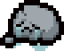
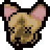
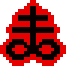
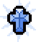
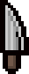
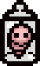
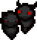

Rock Bottom
Запоминает максимально достигнутое значение каждой характеристики и не дает ей снижаться.
Реальные характеристики все еще имеют значение и влияют в фоновом режиме.

Cricket's Head
+0,5 Урон
x1,5 Множитель урона

Brimstone
Заменяет слезы на заряжаемую атаку кровавым лучом, который пробивает всё насквозь и не ограничен по дальности.
Луч наносит урон слезы персонажа 9 раз.
x0,33 Множитель скорострельности

Holy Mantle
Позволяет один раз не получить урон.
Восстанавливается при каждом переходе в другую комнату.
Polyphemus
x0,42 Множитель скорострельности
+4 Плоский урон
x2 Множитель обычного урона
Если слеза убивает врага со здоровьем меньше урона слезы, она продолжает лететь с вычетом нанесенного урона.
Sacred Heart
Выстрелы персонажа самонаводятся.
+1 HP
Полностью восстанавливает здоровье
x2,3 Множитель урона

Tech X
Заряжаемая стрельба лазерными кольцами, которые не ограничены по дальности и пробивают насквозь всё кроме стен.
Лазерное кольцо всегда наносит урон 15 раз в секунду, скорострельность влияет только на скорость заряда.

Mom's Knife
Заменяет слёзы на нож, который можно направлять в любую сторону, заряжать и бросать на разную дистанцию.
Нож всегда наносит урон 20 раз в секунду. Скорострельность влияет только на скорость заряда.

Dr. Fetus
Персонаж стреляет бомбами, на которые работают характеристики.
x0,4 Множитель скорострельности
Выстрелы-бомбы наносят (Урон слезы персонажа * 10).
Magic Mushroom
+1 HP
Полностью восстанавливает здоровье.
+0,3 Скорость
+0,3 Урон
x1,5 Множитель урона
+2,5 Дальность
х1,25 размер персонажа.
Chaos
Создает 1-6 случайных пикапов.
Найденные предметы будут случайного пула.

Twisted Pair
2 Фамильяра, которые находятся строго по бокам от персонажа.
Они полноценно копируют атаку персонажа и наносят 37,5% урона персонажа